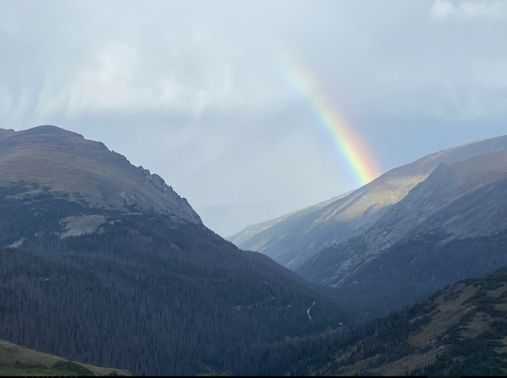

Colorado Coffee
Colorado was one of the most fun trips that I went on last year and to say that I have been DYING to write about it would be an understatement. But wanting to write about something makes it much, much harder to actually write about; so, I didn’t. Instead, I looked at pictures, rewatched videos and listened to the Colorado playlist one more time, hoping something would come to me but…
Nothing.
Until a few weeks ago when a Colorado license plate passed us on the highway and my boyfriend said something about “the best trip,” “happy memories,” and “remember Boulder? That was the best.”
As we continued talking about our favorite parts of the trip, we found ourselves asking - what was it about Colorado that we loved so much? Was it the beautiful weather we had? The gorgeous view from the Rocky Mountains or the field with more elk ears sticking up than grass? Maybe it was the meatball only restaurant we went to? Or the rooftop that had been converted into an actual-garden beer garden? It wasn’t until several memories later that we both realized it was the coffee.
…..
There was no shortage of coffee shops or cafes in any of the cities or stops that we made in Colorado. However, if you’re here for another best of list or top 5*, then you’re going to be wildly disappointed because we did not go to any of them and the ones we did go to were more for the caffeine boost and less for the coffee experience as our hearts only had space for one coffee shop, the Black Rock Coffee Bar.

It was an unspoken rule that our day started with (and our quick mid-morning break consisted of) Black Rock Coffee. His always hot, mine always iced, both always delicious. It became such a spot for us that on our third or fourth visit, the barista said “are you SURE you don’t want a rewards card?”
Maybe it was the sun-drenched patio or the brewery-esque interior that called us in and kept us coming back. Or the fact that it was our first stop after the airport and it made us feel vacation-y. Maybe it was a delicious treat to look forward to after a long day in nature. Maybe it was just that the coffee really was that good. Either way, to this day, whenever we see a Colorado license plate, it brings me (and I like to think him too) back to that little patio, sitting in the sun, sipping on sweetness with the whole day stretching out in front of us. Which makes me think, this love for Black Rock Coffee (while it was delicious coffee) comes more from the quiet moments that it created for us than from the drinks themselves and that, I think, is why we loved Colorado and its coffee so much.
*Side note - if you are here for a best of list or top five, Black Rock Coffee would definitely be on it even if you hate sitting in the sun or spending quiet time with loved ones.*